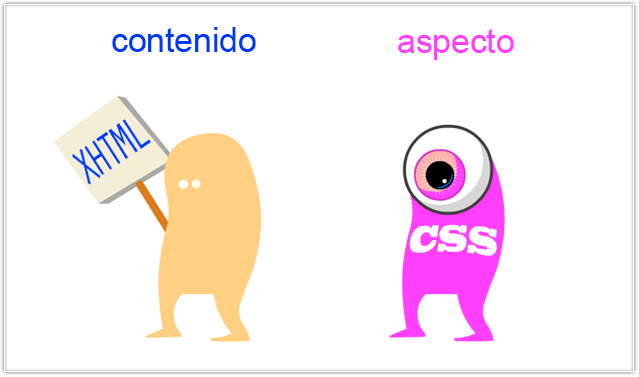
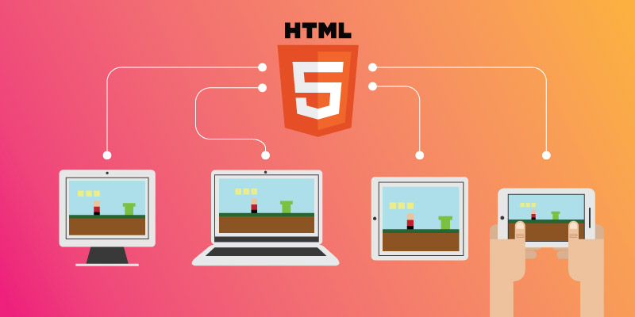

Diseña Aplicaciones Web
- 
- 


Realizado por:
Andrea Trujillo Machorro
4F
Especialidad:
Programación
Submódulo:
Desarrola Aplicaciones Móviles
Docente:
Lic.José Antonio Gómez Hernández
4F
Programación
Desarrola Aplicaciones Móviles
Lic.José Antonio Gómez Hernández
Si buscas en GOOGLE o en cualquier otro buscador la definición de HTML, probablemente encontrarás está: “HTML es un lenguaje de programación que se utiliza para el desarrollo de páginas de Internet. Se trata de la siglas que corresponden a HyperText Markup Language, es decir, Lenguaje de Marcas de Hipertexto”. No obstante, este tipo de definiciones no nos dice mucho porque la definición es técnica. Para algunas personas al leer esto, piensan que HTML incluye el diseño gráfico de las páginas web, sin embargo, eso no es cierto ya que HTML sólo sirve para indicar como va ordenado el contenido de una página web. Esto lo hace por medio de las marcas de hipertexto las cuales son etiquetas conocidas en inglés como tags.

Es un lenguaje de marcado que se utiliza para el desarrollo de páginas de Internet. Se trata de la sigla que corresponde a HyperText Markup Language, es decir, Lenguaje de Marcas de Hipertexto, que podría ser traducido como Lenguaje de Formato de Documentos para Hipertexto.Se trata de un formato abierto que surgió a partir de las etiquetas SGML (Standard Generalized Markup Language). Concepto traducido generalmente como “Estándar de Lenguaje de Marcado Generalizado” y que se entiende como un sistema que permite ordenar y etiquetar diversos documentos dentro de una lista
Por fin vamos a escribir un poquito de código CSS. Hoy vas a aprender las distintas formas de añadir código CSS en tu web:
Estructura y reglas de CSS [ Sintaxis básica | Seudo-clases y Seudo-elementos | Orden de cascada]
Sintaxis básica Reglas Selectores Cualquier elemento HTML es un posible selector CSS1. El selector es simplemente el elemento que está conectado a un estilo particular. Por ejemplo, el selector en:
P { text-indent: 3em } es P. Selectores de clase Un selector sencillo puede tener diferentes clases, permitiendo así al mismo elemento tener diferentes estilos. Por ejemplo, un autor puede querer mostrar el código en un color diferente dependiendo del idioma:Usando las cajas flexibles CSS La propiedad Flexible Box, o flexbox, de CSS3 es un modo de diseño que permite colocar los elementos de una página para que se comporten de forma predecible cuando el diseño de la página debe acomodarse a diferentes tamaños de pantalla y diferentes dispositivos. Para muchas aplicaciones, el modelo "caja flexible" produce una mejora sobre el modelo "bloque" porque no utiliza la propiedad float, ni hace que los márgenes del contenedor flexible interfieran con los márgenes de sus contenidos.

WAMP es el acrónimo usado para describir un sistema de infraestructura de internet que usa las siguientes herramientas: Windows, como sistema operativo; Apache, como servidor web; MySQL, como gestor de bases de datos; PHP (generalmente), Perl, o Python, como lenguajes de programación. El uso de un WAMP permite subir páginas html a internet, además de poder gestionar datos en ellas. Al mismo tiempo, un WAMP proporciona lenguajes de programación para desarrollar aplicaciones web.
JavaScript (abreviado comúnmente JS) es un lenguaje de programación interpretado, dialecto del estándar ECMAScript. Se define como orientado a objetos,[3]basado en prototipos, imperativo, débilmente tipado y dinámico. Se utiliza principalmente en su forma del lado del cliente (client-side), implementado como parte de un navegador web permitiendo mejoras en la interfaz de usuario y páginas web dinámicas[4]aunque existe una forma de JavaScript del lado del servidor(Server-side JavaScript o SSJS). Su uso en aplicaciones externas a la web, por ejemplo en documentos PDF, aplicaciones de escritorio (mayoritariamente widgets) es también significativo.

Cuenta con una interfaz que controla una o varias bases de datos donde se aloja el contenido del sitio web. El sistema permite manejar de manera independiente el contenido y el diseño. Así, es posible manejar el contenido y darle en cualquier momento un diseño distinto al sitio web sin tener que darle formato al contenido de nuevo, además de permitir la fácil y controlada publicación en el sitio a varios editores. Un ejemplo clásico es el de editores que cargan el contenido al sistema y otro de nivel superior (moderador o administrador) que permite que estos contenidos sean visibles a todo el público (los aprueba).